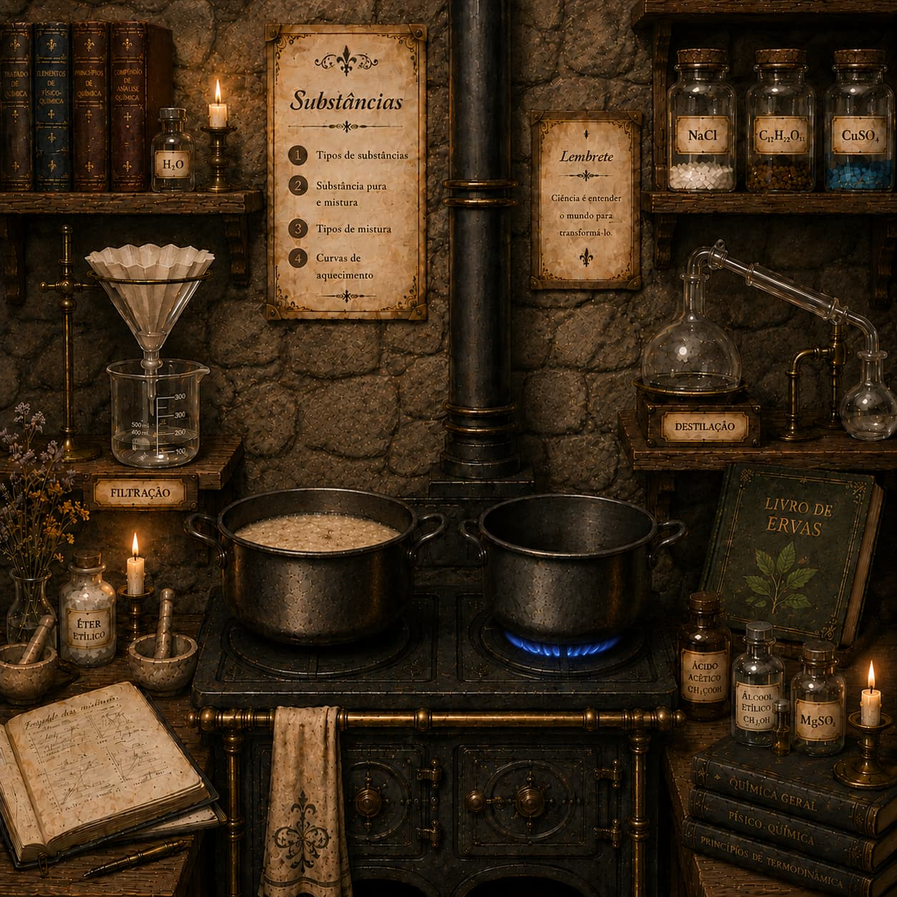

Assista à aulaAcademia KiFácil — Fase 4
Você encontrou uma panela contendo uma mistura de água, areia, álcool e sal.
Para escapar desta sala, será necessário obter sal puro.
Observe os equipamentos disponíveis na cozinha e clique nos objetos na sequência correta,
aplicando os métodos de separação de misturas adequados.
Um bilhete diz: "Preciso do sal puro."
Um bilhete diz: "Preciso do sal puro."
Registro das etapas
As etapas aparecerão aqui à medida que você clicar nos objetos corretos e responder às perguntas.
Filtração
O papel de filtro reteve a areia, que é um sólido insolúvel. Passaram pelo funil: água, álcool e sal dissolvido.
Destilação simples
O álcool foi separado porque possui menor ponto de ebulição que a água. Restaram água e sal na panela.
Evaporação
A água evaporou e o sal permaneceu como sólido cristalino. Agora o NaCl foi obtido puro.
Resultado